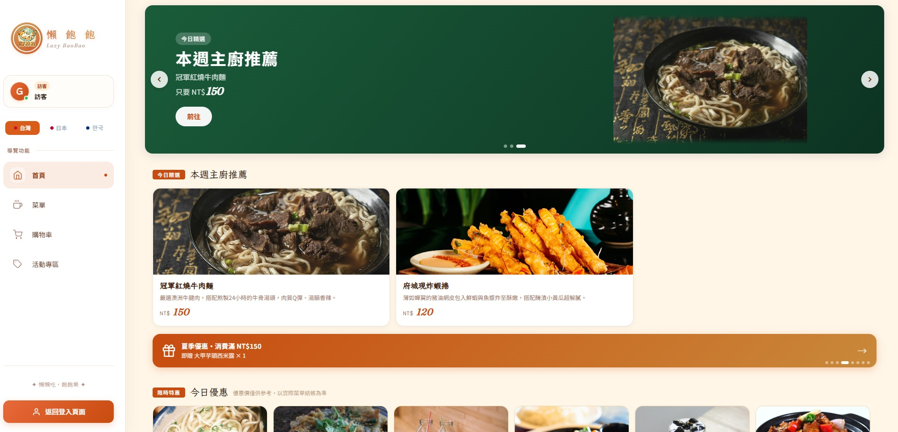
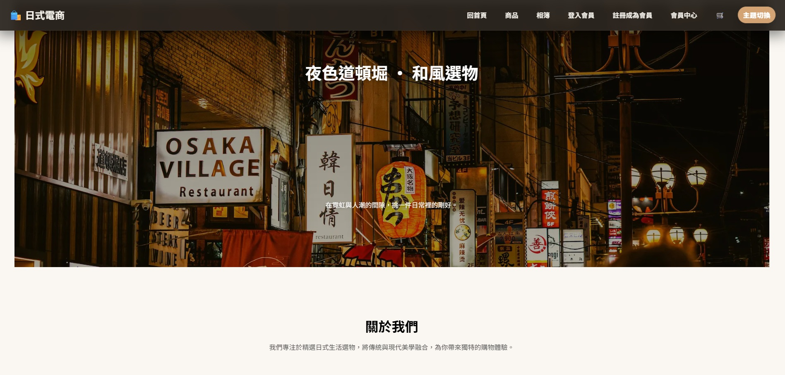
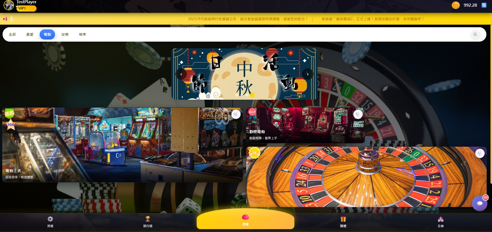
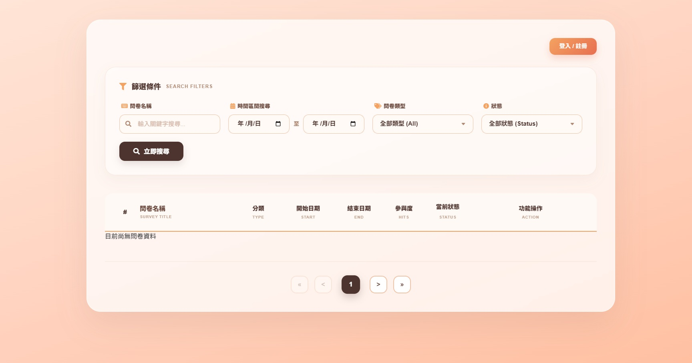
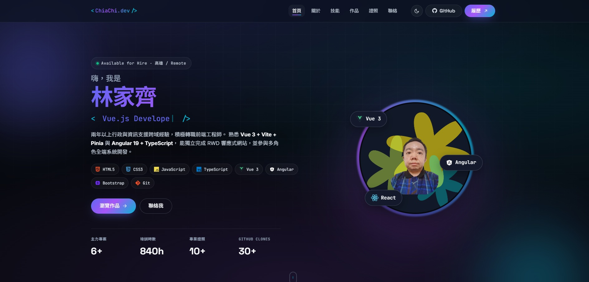
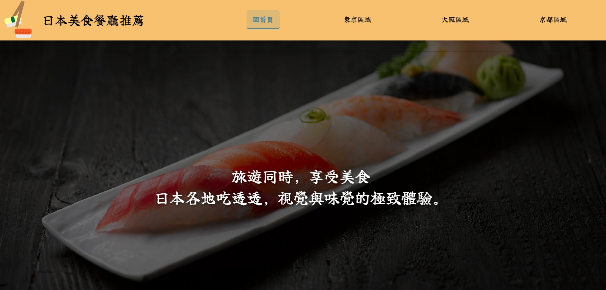

Frontend
- HTML5
- CSS3 / SCSS
- JavaScript
- TypeScript
- Vue 3 + Vite
- Angular 19
- Bootstrap 5
- Pinia
您好，我是林家齊， 具備兩年以上行政支援、電腦維修與 3D 繪圖等跨領域工作經驗， 目前正積極投入前端開發領域。
從 HTML / CSS / JavaScript 起步， 持續深入 Vue 3 + Vite 框架，並擁有 Angular 19 + Spring Boot 團隊專案實戰經驗。 熟悉 Git 版控、GitHub Pages 部署、Figma 介面規劃， 並以 Notion 協作管理開發進度。
目前於台南應用科技大學「Java 全端整合實務運用」就業養成班進修（114/11 ~ 115/05，共 840 小時）， 同步完成六角學院「30 天軟體工程師體驗營 2025」鐵人挑戰。 期望從靜態切版做起，逐步成長為能獨當一面的前端工程師。
行政、繪圖、資訊維修經驗培養出細心、規劃力與解題耐心。
3+ 個 RWD 響應式網站、Vue/Angular Side Project 全流程部署 GitHub。
840 小時 Java 全端養成、六角學院鐵人完賽、AutoCAD 國際認證。
前端為主、後端為輔，並具備 RWD、版控、設計工具與作業系統等綜合能力。
涵蓋團隊全端、電商 Demo、遊戲大廳、靜態 RWD 與個人作品集站； 全部以 Git 完整版控、部署於 GitHub Pages。

台灣在地美食訂餐平台，客戶／POS／老闆三角色一體化解決方案。 採 Angular 19 Standalone Components + Signals 即時同步狀態， 搭配 GSAP、Lottie、AOS 打造完整動畫體驗。




本站。結合 Bootstrap 5、AOS、GSAP ScrollTrigger 與 Glassmorphism 打造的多區塊作品集：Hero 打字機、技能堆疊、卡片動畫、深淺模式切換、 並依 Will 保哥 CSS Guidelines 寫作 BEM 樣式。

「旅遊同時，享受美食」—— 2024/11 起的個人靜態 RWD 作品， 嘗試 AOS 動畫、超連結與圖文排版，呈現 東京／京都／大阪三大區的代表美食， 以日式風格搭配大圖視覺營造沉浸式瀏覽體驗。
從電子、資訊到設計繪圖，跨域累積多項國家級與業界證照。
目前正積極尋找 前端工程師 職缺， 高雄上班或遠端皆可，全職／半天皆考慮。歡迎來信討論合作。